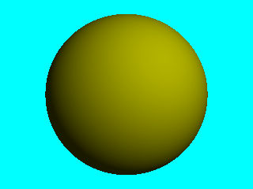

Commencez par créer un répertoire
Tp1
. Vous y sauvegarderez tous les fichiers relatifs à ce premier TP d'initiation à POVRay.
premierescene.pov.
// inclusion des couleurs prédéfinies
#include "colors.inc"
// définition de la couleur de fond
background { color Cyan }
// positionnement de la caméra
camera {
location <0, 2, -3>
look_at <0, 1, 2>
}
// définition d'une source
light_source {
<2, 4, -3>
color White
}
// définition d'une sphère
sphere {
<0, 1, 2>, 2
texture {
pigment { color Yellow }
}
}
Pour faire exécuter ce script par POVRay tapez la commande suivante
dans un terminal :
povray scene1.pov +P
Vous obtenez alors la petite image suivante.

Elle ne représente pas l'état de l'art en infographie ! Elle a été obtenue à l'aide d'un script contenant le nombre minimal de commandes nécessaires au rendu d'une scène.
Dans la commande le paramètre +P demande à POVRay de se mettre en mode pause après avoir effectué le rendu de la scène. Sans ce paramètre POVRay arrête immédiatement son exécution et la fenêtre contenant l'image qui vient d'être créée est fermée. Dans l'un et l'autre cas vous trouverez une sauvegarde de votre image dans un fichier au format PNG. Le nom du fichier sera identique au nom du fichier contenant le script povray exécuté (à l'extension près ...)
Vous pouvez d'autre part modifier la taille de l'image à générer en utilisant les options +H et +W sur la ligne de commande. Par exemple, la commande :
povray scene1.pov +P +W800 +H600
fournira un image en résolution 800 x 600Vous trouverez plus de détails sur la définition d'une caméra, d'une source de lumière et d'une sphère dans l'aide en français déjà citée.
Vous pourrez aussi découvrir dans cette aide la manière de définir un matériau. Dans cette partie où vous êtes en train de découvrir POVRay intéressez-vous uniquement à la façon de définir la couleur d'un objet. Ne vous perdez pas dans cette abondante documentation !
Recherchez le fichier colors.inc. Il se trouve dans le sous-répertoire include du répertoire d'installation de POVRay (généralement /usr/share/povray/include). Vous découvrirez ainsi les couleurs prédéfinies de POVRay.
Éloignez la sphère vers l'arrière de la scène de 10 unités.
Ajoutez une sphère à la scène. Sa couleur doit être différente de celle de la sphère déjà présente et elle doit se trouver devant la première sphère.
Ajoutez une source de lumière ponctuelle. Elle devra être placée symétriquement à la précédente par rapport au plan d'équation x=0.
Après avoir étudié la documentation concernant les plans infinis, ajouter un plan infini parallèle au plan Oxy derrière les deux sphères précédemment définies. Notez l'apparition de l'ombre des sphères sur le plan.